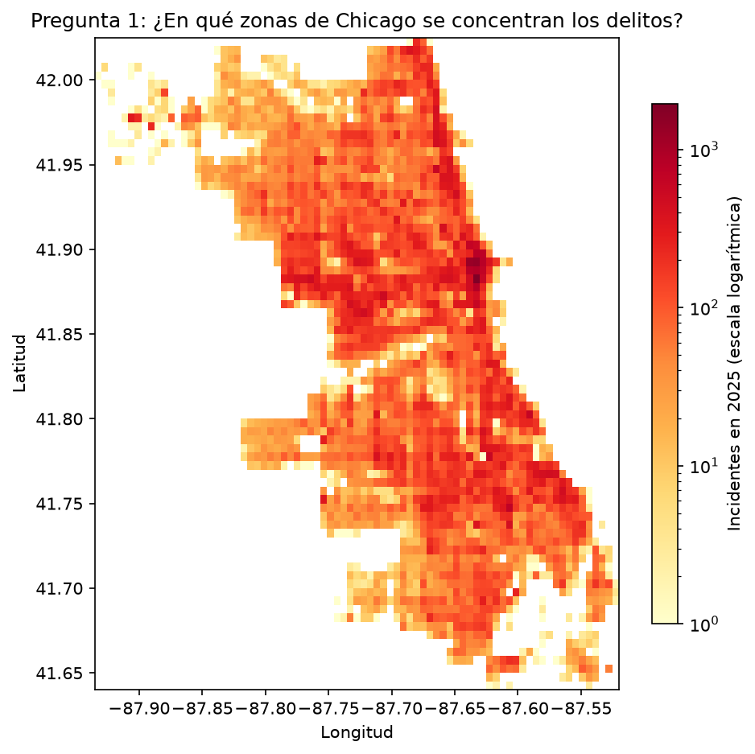
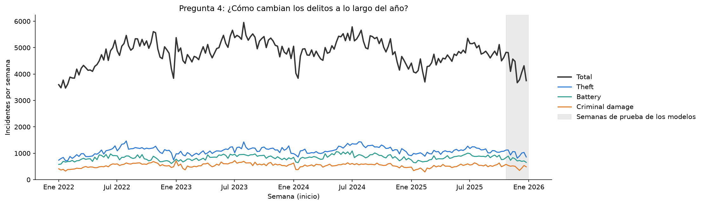

¿Dónde y cuándo habrá delitos en Chicago la próxima semana?
Usamos un millón de reportes de la policía para ayudar a decidir a dónde mandar las patrullas.
Valentino De Paola Gallardo · Carlos David Gonzalez Davila · Eduardo Lopez Uresti
Hay pocas patrullas y mucha ciudad. ¿A dónde las mandamos?
Partimos la ciudad en 274 zonas de patrullaje.
Partimos el día en 4 turnos de 6 horas.
Para cada zona y turno, predecimos cuántos delitos habrá la próxima semana.
Las que salgan más altas son las que conviene vigilar más.
Todos los delitos reportados en Chicago, de 2022 a 2025
delitos reportados
semanas de historia
combinaciones de zona y turno
Vienen del portal de datos abiertos de la ciudad: cada reporte dice qué pasó, dónde y a qué hora.
De un archivo enorme a una predicción, en cinco pasos
Guardar
Bajamos los datos de cada año a un clúster en la nube.
Limpiar
Quitamos errores, duplicados y puntos fuera de Chicago.
Organizar
Contamos los delitos de cada zona, turno y semana.
Aprender
Entrenamos modelos con las semanas pasadas.
Mostrar
Gráficas y esta presentación.

Unos cuantos lugares concentran mucho delito
de los delitos ocurre en solo el 10 % de la ciudad.
Sobre todo en el centro, el oeste y el sur.
La hora con más delitos: las 3 de la tarde

Entre semana, el pico es de 3 a 7 de la tarde.
El fin de semana sube la madrugada.
6 de cada 10 delitos pasan entre el mediodía y la medianoche.
Tres tipos de delito son más de la mitad
Los delitos de drogas y armas los dejamos fuera del modelo: dependen más de dónde patrulla la policía que de dónde pasan.
En verano hay más delitos, y 2025 fue un año más tranquilo

En verano hay 9 % más. Y como 2023 y 2024 fueron más altos, lo reciente pesa más que lo de hace años.
El modelo aprende de lo que pasó antes
Random Forest
Cientos de árboles de decisión que "votan" un número
Zona 1834, de 12 a 18 h, semana del 19 nov
delitos esperados
…y hubo 21
Nos equivocamos por menos de 2 delitos por zona y turno
El modelo mejorado gana, pero por poco: repetir lo que pasó hace poco ya funciona muy bien. Para ganarle tuvimos que darle 4 años de datos y pistas nuevas (vecinos, época del año, festivos).
Si patrullas solo algunas zonas, ¿cuántos delitos cubres?
Lo que predijo el modelo contra lo que pasó
No adivinamos cada delito, pero sí la mezcla de cada zona
veces acertamos el tipo de un delito suelto. Ningún modelo lo hace mejor que fijarse en lo más común de esa zona.
Pero la mezcla de cada zona sí se anticipa bien. Eso le dice a la policía qué tipo de patrulla mandar.
Zona 1834, de 12 a 18 h, últimas 10 semanas de 2025
Tres cosas que aprendimos
Lo reciente predice más
Lo que pasó en una zona las últimas semanas es la mejor pista. Ganarle a esa regla simple fue lo más difícil.
Sí ayuda a patrullar
Vigilando el 10 % de las zonas que dice el modelo se cubre el doble de delitos que eligiendo al azar.
Hay un límite
Parte del delito es azar. Ni sabiendo el futuro se cubriría más del 26 % con el 10 % de las zonas.
Gracias
Lo que seguiría: usar el pronóstico del clima, zonas más chicas y que el modelo se actualice solo cada semana.
Código y documentación: github.com/valentinodepaola/proyecto-integrador-big-data
Datos: Chicago Data Portal